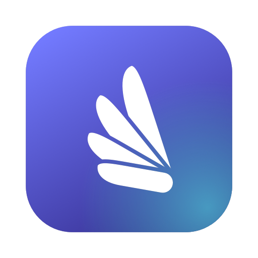
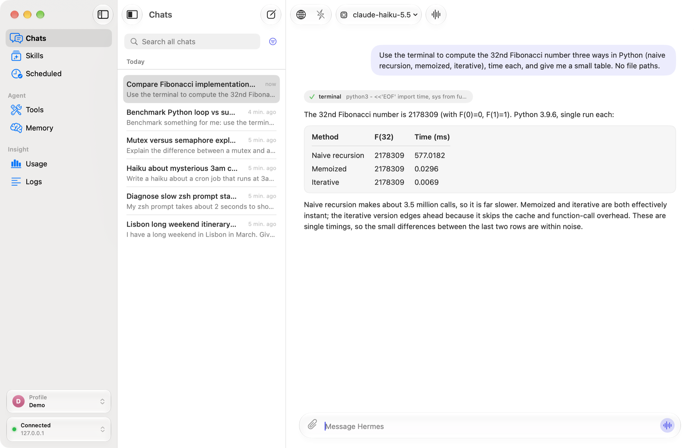

AlariaAlaria is a Mac, iPhone and iPad app for Hermes Agent. It looks and behaves like the other apps on your computer, because it is one.

I wanted a Hermes client that didn’t suck and acted like a native app. Claude can make whatever I want, so I had Claude make it.
That’s the whole story. It’s written in Swift and SwiftUI, it talks to your own Hermes server over its regular API, and it doesn’t phone home anywhere else.
Everything here works on the Mac today. Most of it works on iPhone and iPad too.
/ for the usual commands: model, YOLO, and friends.@work to start a chat in another one.Screenshots from a test server with made-up chats.
Same Hermes, same chats, sized for your hand. It’s in TestFlight while the rough edges come off.
Download the latest DMG from GitHub Releases and drag Alaria to Applications. Updates arrive on their own after that.
Needs macOS 26 and a Hermes server you can reach: on the same Mac, your network, or a tailnet.
In TestFlight, invite only for now.
The Mac app builds with Command Line Tools alone: ./scripts/build.sh